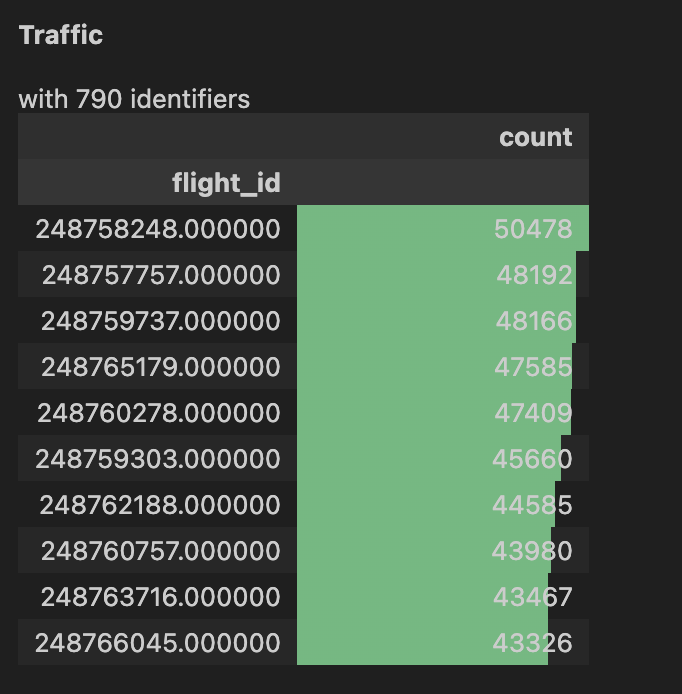
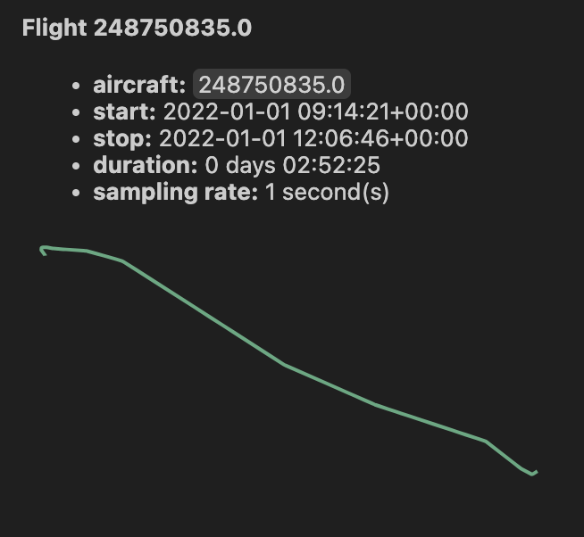
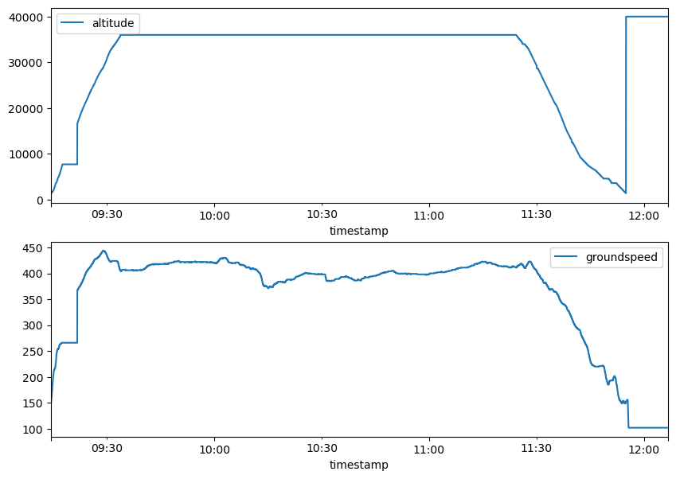

2 Data
The participating teams will have access to two S3 buckets as follows:
competition-data/
└── ...
submissions/
└── ...The competition-data bucket contains the data for modeling, while submissions holds the teams’ submission for ranking. The submissions will not show up when listing the buckets with a team’s account, nevertheless it is present for submission and ranking, see the Ranking section.
Data for modeling
Updated challenge_set.csv on 16th Aug 2024
challenge_set.csv now contains fixes for tow originally below minimum mass for the relevant aircraft types.
Please consider re-downloading it.
We propose two data sets:
- a flight list of (a subset of) flights (partially) flown in Europe in 2022
- the relevant trajectories for the above flights as recorded/processed by OpenSky Network (OSN)
The data sets for the challenge are organized as follows:
competition-data/
├── 2022-01-01.parquet
├── 2022-01-02.parquet
├── ...
├── challenge_set.csv
├── final_submission_set.csv # <-- only 1 week before deadline
└── submission_set.csvEach daily trajectory parquet file contains (Automatic Dependent Surveillance–Broadcast (ADS-B) based) flown trajectories augmented with meteorological information1.
The S3 bucket competition-data contains
- the flight list,
challenge_set.csv - the daily trajectories,
2022-01-01.parquet,2022-01-02.parquet, … - the submission set,
submission_set.csv(andfinal_submission_set.csvonly 1 week before deadline, see Rankings)
Flight List
The flight list consists of 369013 flights departed/arrived in Europe in 2022. It provides details such as (column names in parenthesis, [units] in italic in square brackets when appropriate):
- flight identification: unique ID (
flight_id), (obfuscated) callsign (callsign) - origin/destination: Aerodrome of DEParture (ADEP) (
adep[ICAO code]), Aerodrome of DEStination (ADES) (ades[ICAO code]) and ancillary info, i.e. airport name (name_adep,name_ades) and country code (country_code_adep,country_code_ades[ISO2C]) - timing: date of flight (
date[ISO 8601 UTC date]), Actual Off-Block Time (AOBT) (actual_offblock_time[ISO 8601 UTC date and time]), ARriVal Time (ARVT) (arrival_time[ISO 8601 UTC date and time) - aircraft: aircraft type code (
aircraft_type[ICAO aircraft type]), Wake Turbulence Category (WTC) (wtc) - airline: (obfuscated) Aircraft Operator (AO) code (
airline), - operational values: flight duration (
flight_duration[min]) , taxi-out time (taxiout_time[min]), route length (flown_distance[nmi]) , (estimated) TakeOff Weight (TOW) (tow[kg])
Further info material:
- Airport codes, and more: OurAirports, OA on Observable
- ISO 2-character country codes: ISO2C
- (meaningful) Time and dates formats: ISO 8601
- ICAO aircraft type designator, WTC and more: ICAO aircraft type designator page
Trajectory
The trajectories for the flight list for modeling and the ones for ranking are provided as daily .parquet files amounting to around 158 GiB of (max) 1 second position reports out of ADS-B data collected and processed by OSN.
The daily trajectory files contain:
- flight identification: unique ID (
flight_id, same as for flight list), (obfuscated) ICAO 24-bit address (icao24, same value asflight_id) - 4D position:
longitude[DD, decimal degrees in -90/90 range] andlatitude[DD, decimal degrees in -180/180 range],altitude[ft],timestamp[timestamp with time zone] - speed: ground speed (
groundspeed[kt]), track angle (trackandtrack_unwrapped[decimal degrees]), vertical rate of climb/descent (vertical_rate[ft/min]) - (optionally) meteorological info at 4D position:
- wind (
u_component_of_windandv_component_of_wind[m/s]) temperature[\(K\), kelvin]
- wind (
The daily file <yyyy-mm-dd>.parquet includes all position reports on (UTC) <yyyy-mm-dd> date; it can happen that flight portions be present in consecutive files, i.e. the same flight_id will occur in more than one daily file because the flight took place across the (UTC) midnight.
NOTE: trajectories are not necessarily complete/overlapping with respect to what reported in the flight list in actual_offblock_time or arrival_time. This is due to the possibly limited/partial ADS-B coverage in some parts (or some lower altitudes) of the world. The interval [actual_offblock_time + taxiout_time, arrival_time] is a good approximation of the in-the-air portion of the flight.
Further info material:
- Track in aviation: SkyBrary page
- Ground speed: SkyBrary page
Rationale for the data sets
Our gut feelings say that Actual TakeOff Weight (ATOW) depends in some forms from:
- origin/destination: the great circle distance is of course a factor in terms of how much fuel you will have to tank and hence the take-off weight.
ADEP or ADES are important because of specific local procedures.
ADEP/ADES could also be important because different AOs plan and execute flights differently from/to the same airport. - timing: when you execute a flight, i.e. morning/evening/night, weekly patterns, seasonal trends (IATA season schedule2), local time (?), flight duration calculation, could be a factor to consider
- aircraft: the (ICAO) type3 will imply different amounts of fuel needed,
- airline: policies varies, for example for same city-pair one airline could select different alternates from another airline depending on their technical support facilities/contracts.
Also AOs have different tanking policies. - operational: flown route length (different from great circle distance) could better refine ATOW estimation; same for taxi-out duration
- trajectory: The ADS-B trajectory can help to classify the way a flight has been flown (rate of climb/descent, maximum en-route flight level, …) and hence refine the ATOW estimate.
Dataset for submission
Refreshed submission_set.csv on 8th Aug 2024
submission_set.csv now contains all columns and not just flight_id and tow.
Please consider re-downloading it.
The submission file, competition-data/submission_set.csv, contains a flight list for which to estimate the TOW; it has the same columns as the flight list (but of course empty tow.)
The relevant trajectories are part of the ones provided in the Trajectory dataset.
Where/How to get the Datasets
The dataset files are hosted on OSN infrastructure.
Upon registration of your team you should have received the relevant
- team name and ID
BUCKET_ACCESS_KEYandBUCKET_ACCESS_SECRET.
something like
{
"team_name": "team_warm_donkey",
"team_id": "b8e3a438-d2f2-4a11-bf28-e7a8f84cf3db",
"bucket_access_key": "blah",
"bucket_access_secret": "blahblah"
}Below you can find the details on how to access the data sets and submit your results for ranking.
Using MinIO Client
Pre-requisites
The steps below have been executed on a MBR/macOS machine but it should be easy to apply them to other Unix-like environments (we did similarly on MS Windows via Git Bash.)
Install MinIO Client for your OS/environment:
$ brew install minio/stable/mcSet an alias up for the challenge data location:
$ mc alias set dc24 \ https://s3.opensky-network.org/ \ ACCESS_KEY SECRET_KEYwhere
ACCESS_KEYis the value ofbucket_access_keyandSECRET_KEYthe one ofbucket_access_secret.
Read/Write data
From the command line you can
list the competition buckets
$ mc ls dc24 [2024-07-05 04:05:29 CEST] 0B competition-data/list the content of the (read-only)
competition-data/bucket$ mc ls dc24/competition-data/ [2024-07-10 10:58:23 CEST] 12MiB STANDARD 2022-01-01.parquet [2024-07-10 10:58:34 CEST] 19MiB STANDARD 2022-01-02.parquet ... [2024-07-11 12:41:20 CEST] 164MiB STANDARD challenge_set.csv [2024-07-11 12:42:43 CEST] 1.1MiB STANDARD submission_set.csvcopy Jan 2022 trajectory files from the (read-only)
competition-data/bucket to a local directory$ mc cp --recursive dc24/competition-data/2022-01 my-local-directory/copy all files from the (read-only)
competition-data/bucket to a local directory$ mc cp --recursive dc24/competition-data/ my-local-directory/
Using Python
Pre-requisites
You need to have pyopensky installed as detailed here.
Also your configuration files should contain the relevant values for ACCESS_KEY and SECRET_KEY as explained above.
[default]
username = your_osn_user
password = ...
access_key = ACCESS_KEY
secret_key = SECRET_KEYRead/Write Data
The following code allows to download the challenge files
from pyopensky.s3 import S3Client
s3 = S3Client()
for obj in s3.s3client.list_objects("competition-data", recursive=True):
print(f"{obj.bucket_name=}, {obj.object_name=}")
s3.download_object(obj)Using traffic for Exploratory Data Analysis
You can explore the trajectory data using the traffic in a Python notebook.
For example you can load one of the daily trajectory files
import warnings
from tqdm import TqdmExperimentalWarning
warnings.filterwarnings("ignore", category=TqdmExperimentalWarning)
warnings.filterwarnings("ignore", category=FutureWarning)
from traffic.core import Traffic
from datetime import timedelta
import matplotlib.pyplot as plt
from matplotlib.dates import DateFormatter
t = Traffic.from_file('2022-01-01.parquet')plot the list of flights
t
a 2D map
trj = t[11]
trj
248750835and finally a vertical profile with ground speed:
with plt.style.context("traffic"):
fig, ax = plt.subplots(figsize=(10, 7))
(
trj
.plot_time(
ax=ax,
y=["altitude", "groundspeed"],
secondary_y=["groundspeed"]
)
)
ax.set_xlabel("")
ax.tick_params(axis='x', labelrotation=0)
ax.xaxis.set_major_formatter(DateFormatter("%H:%M"))
248750835Note: the vertical profile for flight 248750835 shows that you should probably have considered only the [actual_offblock_time + taxiout_time, arrival_time] interval if interested in the in-the-air portion of the flight, i.e. cut the final portion at 2022-01-01T11:55:15Z.
Ranking
The submission bucket is organized as follows (teams’ accounts won’t be able to list this bucket contents):
submissions/
├── team_warm_donkey_v1_b8e3a438-d2f2-4a11-bf28-e7a8f84cf3db.csv
├── team_warm_donkey_v2_b8e3a438-d2f2-4a11-bf28-e7a8f84cf3db.csv
├── team_zesty_wreath_v1_4eabd02b-1622-44d8-8066-1dccd12bd585.csv
└── ...For ranking you’ll need to upload a file with your estimated TOWs (column tow) for all the flight IDs (column flight_id) as present in the competition-data/submission_set.csv. Its content can be as simple as
flight_id, tow
258081039, 123
258081111, 456
...Your submission file needs to be uploaded to the submissions/ bucket in a file named
<team_name>_v<num>_<team_id>.csv
where you are responsible to increase num accordingly for each of your submissions:
$ team_name='team_warm_donkey'
$ team_id='b8e3a438-d2f2-4a11-bf28-e7a8f84cf3db'
$ num=3
$ subfile=${team_name}_v${num}_${team_id}.csv
$ mc cp ./my_submission.csv dc24/submissions/${subfile}Here you use the dc24 alias as explained above.
The ranking job will be automatically run every 30 minutes and will use Root Mean Square Error (RMSE) to compare a submission for the 105959 flights in submission_set.csv with the (hidden) the ground truth.
The final ranking will use an additional 52190 flights. See the Ranking page for more details.
The leaderboard will display the new ranks.
Eventually manually reload it, please.
You can also get a JSON file with the rankings as (| jq only for pretty printing):
$ curl -X 'GET' \
'https://datacomp.opensky-network.org/api/rankings' \
-H 'accept: application/json' | jq
[
{
"mse": 9752328117.3738,
"rank": 1,
"team_name": "team_radiant_xerox",
"file_version": "v2"
},
{
"mse": 9752339084.6523,
"rank": 2,
"team_name": "team_bold_xylophone",
"file_version": "v1"
}
]List of Acronyms
ADEP: Aerodrome of DEParture
ADES: Aerodrome of DEStination
ADS-B: Automatic Dependent Surveillance–Broadcast
AO: Aircraft Operator
AOBT: Actual Off-Block Time
ARVT: ARriVal Time
ATOW: Actual TakeOff Weight
ECMWF: European Centre for Medium-Range Weather Forecasts
OSN: OpenSky Network
RMSE: Root Mean Square Error
TOW: TakeOff Weight
WTC: Wake Turbulence Category
from Google’s Analysis-Ready, Cloud Optimized (ARCO) ERA5:
ERA5 is the fifth generation of the European Centre for Medium-Range Weather Forecasts (ECMWF) Atmospheric Reanalysis, providing hourly estimates of a large number of atmospheric, land, and oceanic climate variables.
The Google Cloud Public Dataset Program hosts ERA5 data that spans from 1940 to recent days, covering the Earth on a 30 km grid and resolves the atmosphere using 137 levels from the surface up to a height of 80 km.↩︎IATA Summer schedule for year
YYYYbegins on the last Sunday of MarchYYYYand ends on the last Saturday of OctoberYYYY.
IATA Winter schedule for yearYYYYbegins on the Sunday after the last Saturday of OctoberYYYYand ends on the Saturday before last Sunday of MarchYYYY + 1.↩︎and possibly the engine types/age, but these are unfortunately not included in the Data for modeling dataset.↩︎